Introdução à Biologia
A Biologia é a ciência natural voltada para o estudo da vida e dos organismos vivos. A complexidade do fenômeno vital exige abordagens em diferentes níveis de organização, desde interações moleculares microscópicas até dinâmicas complexas de ecossistemas inteiros.
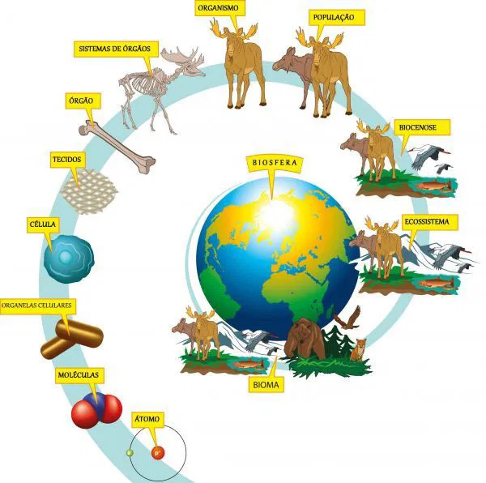
Características dos Seres Vivos
Organismos vivos não são definidos por um único atributo, mas sim por um conjunto indissociável: composição química baseada em carbono, metabolismo (anabolismo e catabolismo), resposta a estímulos (irritabilidade e sensibilidade), reprodução e hereditariedade (material genético), além da capacidade de evoluir e adaptar-se ao meio.
O Método Científico na Biologia
Investigações biológicas dependem do método empírico. Começa-se com a observação rigorosa, seguida pela formulação de hipóteses falseáveis. Posteriormente, conduzem-se experimentos controlados (com grupos controle e experimentais) para refutar ou corroborar as premissas iniciais.
Células Procariontes e Eucariontes
A célula é a unidade morfológica e fisiológica de todos os seres vivos. Entender sua arquitetura e funcionamento é pré-requisito para o estudo de tecidos, sistemas e biotecnologia.
As células podem ser classificadas em dois grandes grupos: Procariontes e Eucariontes
Células Procariontes
São células simples, sem núcleo definido e sem organelas membranosas. O material genético está disperso no citoplasma.
E elas são formadas por:
Nucleoide: Região onde fica o material genético (DNA circular único)
Plasmídios: Pequenos fragmentos extras de DNA com informações genéticas de vantagem, como resistência a antibióticos
Ribossomos: Estruturas que fabricam proteínas
Citoplasma: Líquido gelatinoso que preenche o interior da célula
Membrana plasmática: Controla a entrada e saída de substâncias
Parede celular: Envoltório rígido que dá forma e proteção
Cápsula: Camada externa viscosa que protege contra defesas do organismo hospedeiro
Flagelos: Estruturas filamentosas que permitem a locomoção
Pili: Estruturas que permitem a adesão a superfícies e a troca de material genético
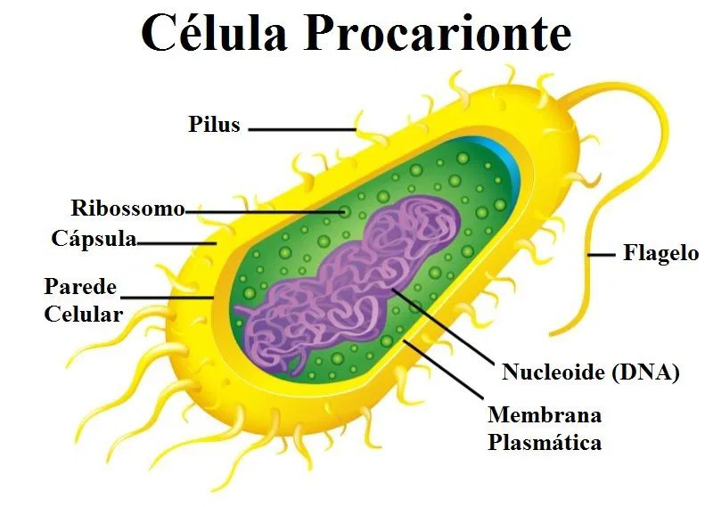
Células Eucariontes
São células que possuem compartimentalização complexa, com núcleo verdadeiro delimitado pela carioteca. Abundância de organelas membranosas (mitocôndrias, complexo golgiense, retículos endoplasmáticos). Dividem-se fundamentalmente em eucarioto animal e vegetal.
E elas são formadas por:
Núcleo: Contém o material genético (DNA linear) e é delimitado pela membrana nuclear
Mitocôndrias: Responsáveis pela produção de energia (ATP) através da respiração celular
Ribossomos: Estruturas que fabricam proteínas
Retículo Endoplasmático Rugoso: Síntese e transporte de proteínas
Retículo Endoplasmático Liso: Síntese de lipídios e detoxificação
Complexo Golgiense: Modificação, empacotamento e distribuição de proteínas e lipídios
Lisossomos: Contêm enzimas digestivas para degradação de macromoléculas
Peroxissomos: Contêm enzimas para a decomposição de peróxidos e outras substâncias tóxicas
Citoesqueleto: Rede de filamentos que dá suporte estrutural e facilita o transporte intracelular
Membrana plasmática: Controla a entrada e saída de substâncias
Parede celular (somente em células vegetais): Confere rigidez e proteção
Cloroplastos (somente em células vegetais): Realizam a fotossíntese, convertendo energia solar em energia química
Vacúolos (maior em células vegetais): Armazenam água, nutrientes e resíduos
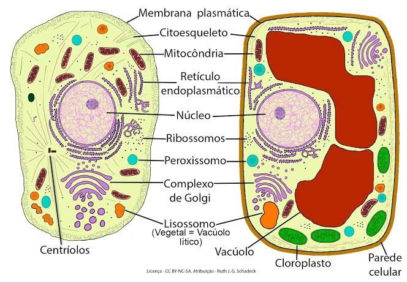
Organelas Celulares
As organelas celulares são estruturas especializadas dentro das células eucarióticas que desempenham funções vitais para a sobrevivência e funcionamento da célula. Cada organela tem um papel específico, contribuindo para a homeostase e eficiência celular.
As principais organelas incluem:
- Núcleo: Contém o material genético (DNA) e coordena as atividades celulares, incluindo crescimento, metabolismo e reprodução.
- Mitocôndrias: Responsáveis pela produção de energia (ATP) através da respiração celular.
- Retículo Endoplasmático Rugoso (RER): Síntese e transporte de proteínas, possui ribossomos aderidos à sua superfície.
- Retículo Endoplasmático Liso (REL): Síntese de lipídios, metabolismo de carboidratos e detoxificação de drogas e venenos.
- Complexo Golgiense: Modifica, empacota e distribui proteínas e lipídios para diferentes destinos dentro ou fora da célula.
- Lisossomos: Contêm enzimas digestivas que degradam macromoléculas, organelas danificadas e partículas englobadas pela célula.
- Peroxissomos: Contêm enzimas que neutralizam substâncias tóxicas, como peróxidos, e participam do metabolismo lipídico.
- Citoesqueleto: Rede de filamentos que dá suporte estrutural à célula, facilita o transporte intracelular e participa da divisão celular.
- Cloroplastos (em células vegetais): Realizam a fotossíntese, convertendo energia solar em energia química armazenada em moléculas de glicose.
- Vacúolos: Armazenam água, nutrientes e resíduos; em células vegetais, o vacúolo central também ajuda a manter a pressão de turgor.
- Membrana plasmática: Controla a entrada e saída de substâncias, mantendo a homeostase celular.
- Parede celular (em células vegetais): Confere rigidez, proteção e suporte estrutural à célula.
- Ribossomos: Estruturas responsáveis pela síntese de proteínas, presentes tanto em células procarióticas quanto eucarióticas.
- Flagelos e cílios: Estruturas de locomoção e movimentação de fluidos, presentes em algumas células.
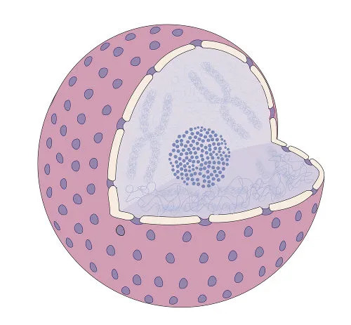
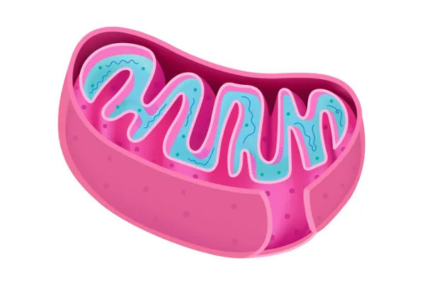
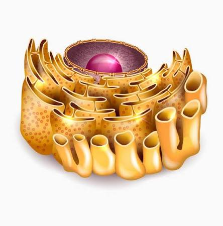
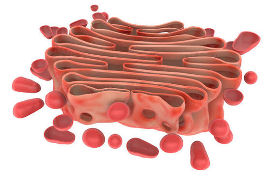
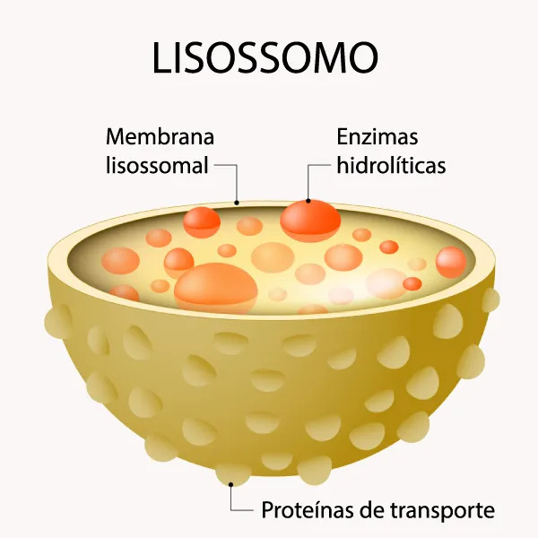
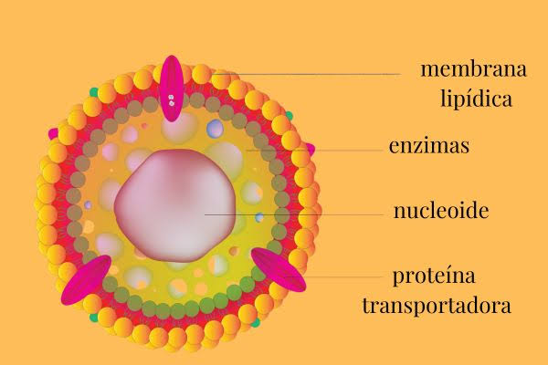
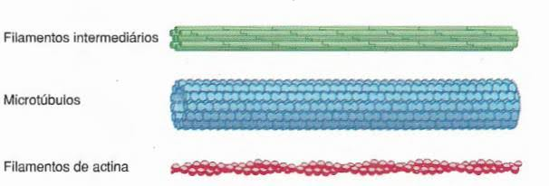
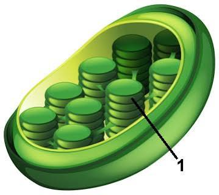
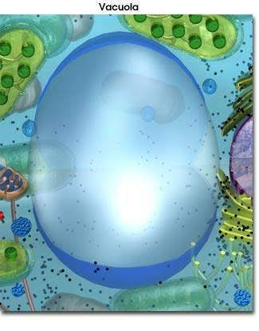
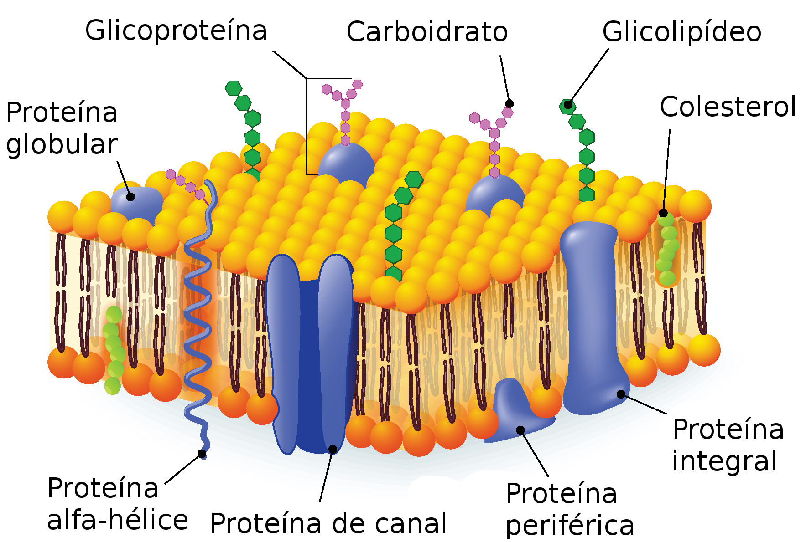
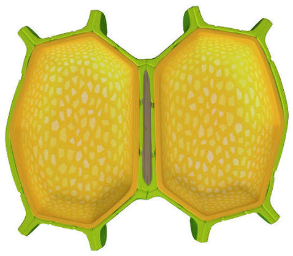
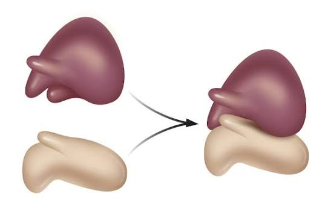
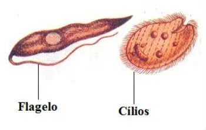
Membrana Plasmática e Transporte
A membrana plasmática é uma estrutura semipermeável que envolve a célula, controlando a entrada e saída de substâncias. Ela é composta principalmente por uma bicamada lipídica com proteínas embutidas, permitindo a comunicação e transporte entre o interior e o exterior da célula.
Os principais mecanismos de transporte através da membrana incluem:
Difusão Simples: A difusão simples é um tipo de transporte passivo através da membrana celular. Nela, as moléculas se movem de uma região de maior concentração para uma região de menor concentração. Como ocorre a favor do gradiente de concentração, não há gasto de energia (ATP).
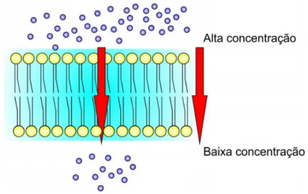
Difusão Facilitada: A difusão facilitada é um tipo de transporte passivo que ocorre através de proteínas transportadoras ou canais na membrana plasmática. Ela permite a passagem de moléculas polares ou grandes, que não conseguem atravessar a bicamada lipídica por difusão simples. Assim como a difusão simples, a difusão facilitada ocorre a favor do gradiente de concentração, sem gasto de energia (ATP).
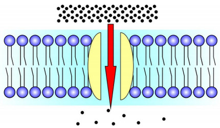
Osmose: A osmose é um tipo de transporte passivo que envolve a difusão de água através de uma membrana semipermeável. A água se move do meio hipotônico (menor concentração de solutos) para o meio hipertônico (maior concentração de solutos), buscando equilibrar as concentrações de solutos em ambos os lados da membrana. A osmose é essencial para a manutenção da pressão osmótica e do volume celular.
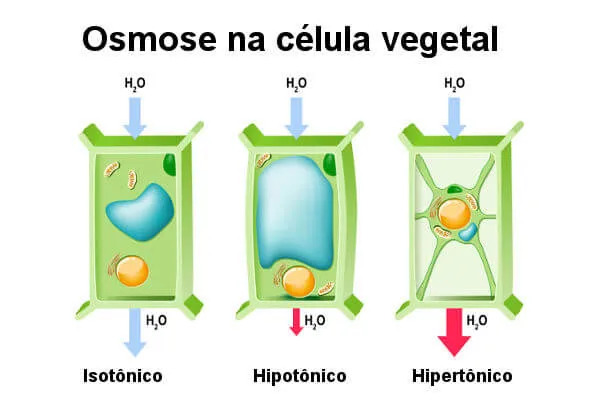
Transporte Ativo: O transporte ativo é um processo que permite o movimento de substâncias contra o gradiente de concentração, ou seja, do meio de menor concentração para o de maior concentração. Esse tipo de transporte requer energia, geralmente na forma de ATP, e envolve proteínas transportadoras específicas na membrana plasmática.
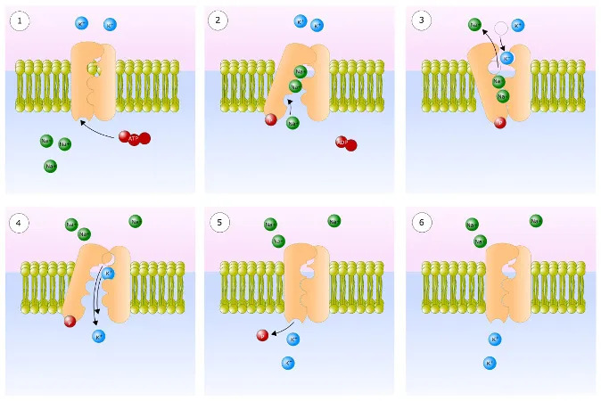
Endocitose: A endocitose é um processo pelo qual a célula engole partículas sólidas ou líquidas, formando vesículas a partir da membrana plasmática. Existem diferentes tipos de endocitose, incluindo fagocitose (ingestão de partículas sólidas) e pinocitose (ingestão de líquidos).
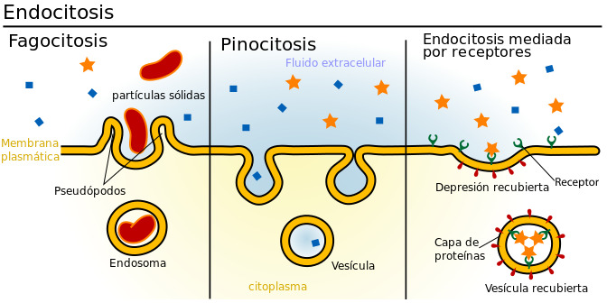
Exocitose: A exocitose é o processo pelo qual a célula libera substâncias para o meio extracelular através da fusão de vesículas com a membrana plasmática. Esse mecanismo é utilizado para a secreção de hormônios, neurotransmissores e outras moléculas importantes para a comunicação celular e manutenção do ambiente extracelular.
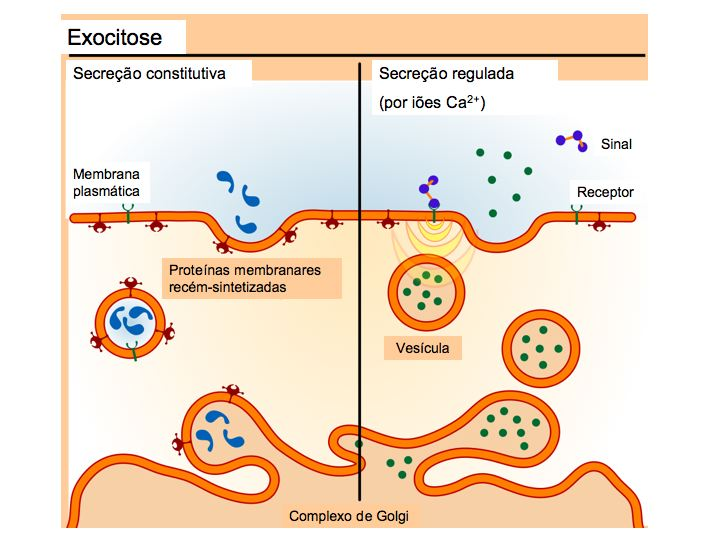
Divisão Celular (Mitose e Meiose)
A divisão celular é um processo fundamental para o crescimento, desenvolvimento e reprodução dos organismos vivos.
Existem dois tipos principais de divisão celular:
Mitose: Processo de divisão celular que resulta em duas células-filhas geneticamente idênticas à célula-mãe, essencial para o crescimento e reparo dos tecidos.
Meiose: Processo de divisão celular que reduz o número de cromossomos pela metade, resultando em quatro células-filhas geneticamente diferentes, crucial para a reprodução sexual e variabilidade genética.
Mitose
A mitose é um processo de divisão celular no qual uma célula-mãe se divide para formar duas células-filhas geneticamente idênticas. É fundamental para o crescimento, regeneração de tecidos e reprodução assexuada em organismos eucariontes. O processo mantém o mesmo número de cromossomos da célula original.
Como funciona:
Antes da divisão, a célula passa pela Intérfase, onde o DNA é duplicado. A mitose em si é um processo contínuo didaticamente dividido em quatro fases principais:
Prófase: O DNA se condensa formando cromossomos visíveis e o fuso mitótico começa a se formar.
Metáfase: Os cromossomos atingem seu grau máximo de condensação e alinham-se no equador da célula.
Anáfase: As cromátides-irmãs (metades duplicadas de cada cromossomo) são separadas e puxadas para os polos opostos da célula.
Telófase: Os cromossomos chegam aos polos e a membrana nuclear começa a se reorganizar ao redor de cada novo conjunto, preparando a separação do citoplasma (citocinese)
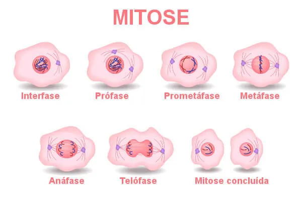
Meiose
A meiose é um processo de divisão celular em que uma célula diploide (2n) duplica seu DNA e passa por duas divisões sucessivas, originando quatro células haploides (n). Sua função principal é produzir gametas (óvulos e espermatozoides) nos animais e esporos nos vegetais, reduzindo o número de cromossomos pela metade.
Como funciona:
Antes da divisão, a célula passa pela Intérfase, onde o DNA é duplicado. A mitose em si é um processo contínuo didaticamente dividido em quatro fases principais:Prófase: O DNA se condensa formando cromossomos visíveis e o fuso mitótico começa a se formar.
Metáfase: Os cromossomos atingem seu grau máximo de condensação e alinham-se no equador da célula.
Anáfase: As cromátides-irmãs (metades duplicadas de cada cromossomo) são separadas e puxadas para os polos opostos da célula.
Telófase: Os cromossomos chegam aos polos e a membrana nuclear começa a se reorganizar ao redor de cada novo conjunto, preparando a separação do citoplasma (citocinese)
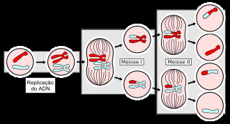
Genética e Hereditariedade
A genética é o ramo da biologia que estuda a hereditariedade e a variação dos organismos. Ela investiga como os traços são transmitidos de uma geração para outra através dos genes, que são segmentos de DNA localizados nos cromossomos.
Os princípios fundamentais da genética foram estabelecidos por Gregor Mendel, que realizou experimentos com ervilhas e formulou as leis da herança.
Leis de Mendel
As leis de Mendel são a base da genética moderna.
1. Lei da Segregação
Cada indivíduo possui dois alelos para cada característica, que se segregam durante a formação dos gametas, garantindo que cada gameta receba apenas um alelo de cada par.
2. Lei da Distribuição Independente
Os alelos de diferentes genes se distribuem de forma independente uns dos outros durante a formação dos gametas, permitindo combinações variadas de características.
3. Lei da Dominância
Quando dois alelos diferentes estão presentes, o alelo dominante se expressa, enquanto o alelo recessivo fica mascarado.
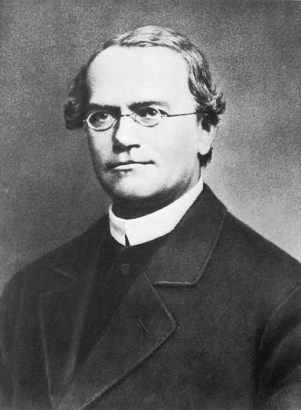
DNA e RNA
O material genético dos seres vivos é composto por ácidos nucleicos, sendo o DNA (ácido desoxirribonucleico) e o RNA (ácido ribonucleico) os principais. O DNA armazena a informação genética, enquanto o RNA desempenha papéis essenciais na síntese de proteínas e na regulação gênica.
Estrutura do DNA
O DNA é uma molécula de dupla hélice composta por nucleotídeos, cada um formado por um grupo fosfato, uma molécula de açúcar (desoxirribose) e uma base nitrogenada (adenina, timina, citosina ou guanina). As bases se emparelham de forma complementar: adenina com timina e citosina com guanina.
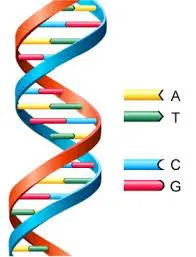
Estrutura do RNA
O RNA é geralmente de fita simples e possui ribose como açúcar. Suas bases nitrogenadas incluem adenina, uracila, citosina e guanina. O RNA desempenha funções cruciais na transcrição e tradução da informação genética contida no DNA.
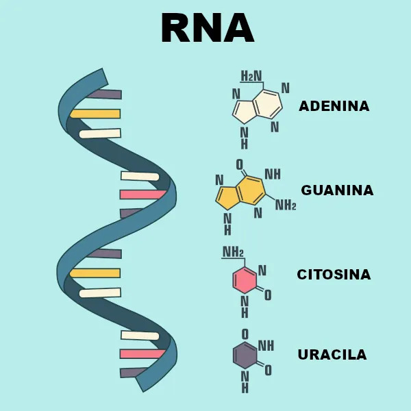
Síntese Proteica
A síntese proteica é o processo celular fundamental em que a informação genética do DNA é decodificada para produzir proteínas. Ela é essencial para a estrutura, função e regulação de todas as células do corpo e ocorre em duas etapas principais: >
Durante a transcrição, a informação contida no DNA é copiada para uma molécula de RNA mensageiro (mRNA). A enzima RNA polimerase se liga ao DNA e sintetiza o mRNA complementar à fita de DNA, que posteriormente será processado e transportado para o citoplasma. 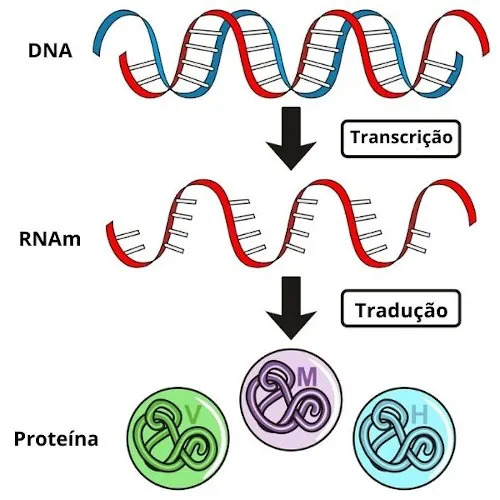 Na tradução, o mRNA é lido pelos ribossomos, que utilizam a informação para sintetizar proteínas. O RNA transportador (tRNA) traz os aminoácidos correspondentes aos códons do mRNA, permitindo a formação de uma cadeia polipeptídica que se dobrará em uma proteína funcional. A biotecnologia é um campo interdisciplinar que aplica princípios biológicos e tecnológicos para desenvolver produtos e processos inovadores. Ela combina conhecimentos de biologia molecular, genética, microbiologia e engenharia para criar soluções em saúde, agricultura, indústria e meio ambiente. Organismos Geneticamente Modificados (OGMs) são organismos cujo material genético foi alterado de maneira artificial, utilizando técnicas de engenharia genética. Essa modificação permite a introdução de características desejáveis, como resistência a pragas, tolerância a herbicidas ou melhoria nutricional. 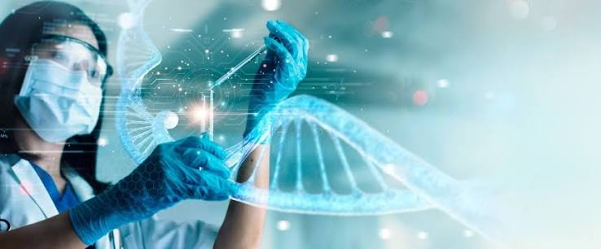 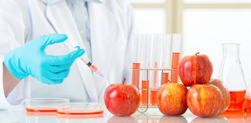 A evolução é o processo pelo qual os organismos mudam ao longo do tempo, resultando na diversidade de espécies que observamos hoje. Diversas teorias foram propostas para explicar como a evolução ocorre, sendo a mais influente a teoria da seleção natural de Charles Darwin. Proposta por Charles Darwin, a seleção natural sugere que os indivíduos com características vantajosas têm maior probabilidade de sobreviver e se reproduzir, transmitindo essas características para as próximas gerações. Com o tempo, isso leva à adaptação das populações ao ambiente. 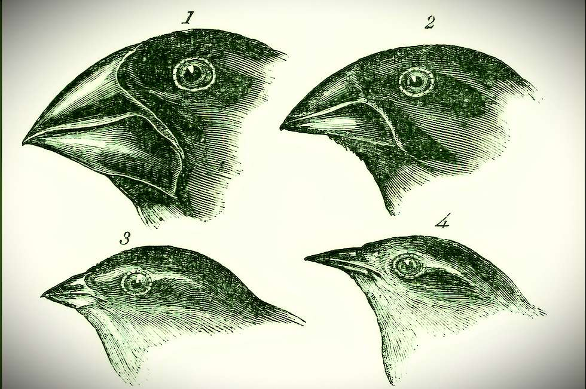 Proposta por Jean-Baptiste Lamarck, essa teoria sugere que os organismos podem adquirir características durante sua vida e transmiti-las para seus descendentes. Por exemplo, o uso ou desuso de órgãos poderia levar ao seu desenvolvimento ou atrofia, respectivamente. 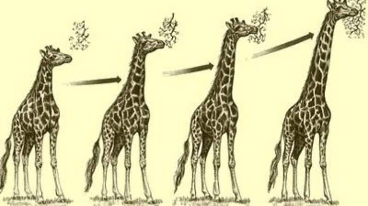 Também conhecida como neodarwinismo, essa teoria combina a seleção natural com a genética mendeliana, explicando a evolução como resultado da variação genética e da seleção natural ao longo do tempo. 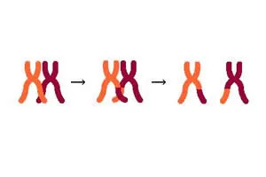 A evolução é apoiada por diversas evidências científicas que demonstram como os organismos mudaram ao longo do tempo. Essas evidências incluem registros fósseis, anatomia comparada, embriologia e genética molecular. Os fósseis fornecem evidências diretas da existência de organismos que viveram no passado, permitindo a reconstrução da história evolutiva e a identificação de espécies extintas. 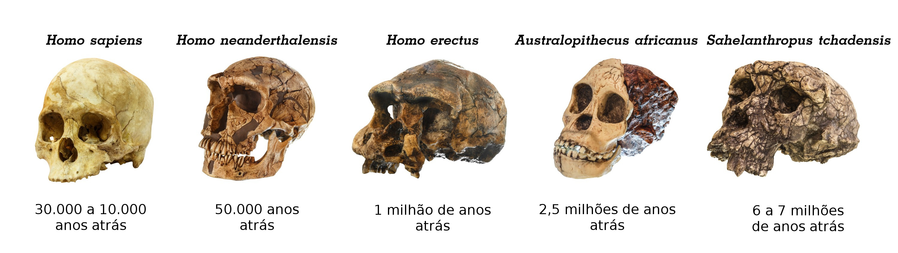 A comparação da anatomia de diferentes espécies revela semelhanças estruturais que sugerem ancestrais comuns. Estruturas homólogas indicam relações evolutivas entre os organismos. 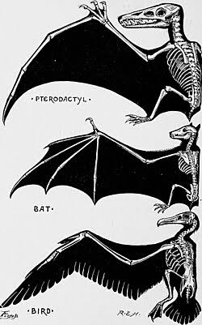 O estudo do desenvolvimento embrionário mostra que muitos organismos passam por estágios semelhantes durante o desenvolvimento, sugerindo uma origem evolutiva comum. 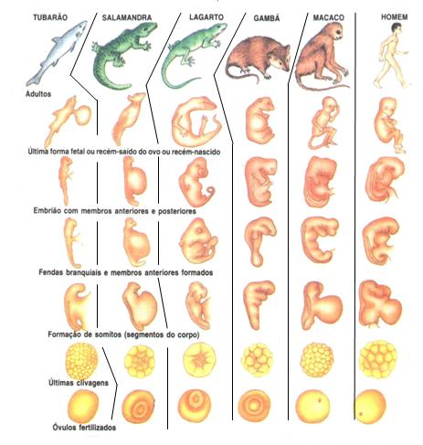 A seleção natural é o processo pelo qual indivíduos com características vantajosas têm maior probabilidade de sobreviver e se reproduzir, transmitindo essas características para as próximas gerações. Esse mecanismo é um dos principais motores da evolução, promovendo a adaptação das populações ao ambiente. A seleção natural atua sobre a variação genética presente em uma população. Indivíduos com características que aumentam sua aptidão (capacidade de sobreviver e reproduzir) têm maior sucesso reprodutivo, enquanto aqueles com características menos vantajosas têm menor probabilidade de deixar descendentes. Um ecossistema é uma comunidade de organismos vivos interagindo com o seu ambiente físico. Ele inclui todos os seres vivos (biocenose) e os elementos não vivos (biótopo), como solo, água e clima, que influenciam a vida na região. Produtores são organismos que produzem seu próprio alimento. Eles transformam energia da luz ou de reações químicas em energia utilizável. Eles formam a base de todas as cadeias alimentares. Sem eles, a vida não existiria Eles são conhecidos como autótrofos (seres que fabricam o próprio alimento). Os principais exemplos incluem: 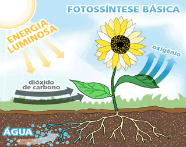 Na ecologia, consumidores são seres vivos que não produzem o próprio alimento. Eles dependem de outros organismos para obter energia e nutrientes. Eles também são conhecidos como heterótrofos Os consumidores são classificados em níveis com base em quem eles comem: Consumidores primários: Herbívoros que se alimentam de produtores. Consumidores secundários: Carnívoros que se alimentam de herbívoros. Consumidores terciários: Carnívoros que se alimentam de outros carnívoros. Consumidores onívoros: Animais que se alimentam tanto de plantas quanto de outros animais. 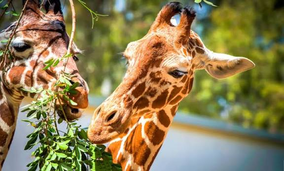 Os decompositores são seres vivos que transformam restos de plantas e animais mortos em nutrientes simples. Eles atuam como a "equipe de reciclagem" da natureza. Sem eles, o mundo ficaria cheio de lixo e cadáveres. Esse processo devolve minerais essenciais para o solo, que ajudam novas plantas a crescerem Exemplos de decompositores incluem fungos, bactérias e alguns insetos, como besouros e larvas. Eles desempenham um papel crucial na manutenção do equilíbrio ecológico, garantindo que os nutrientes sejam reciclados e disponibilizados para outros organismos no ecossistema. 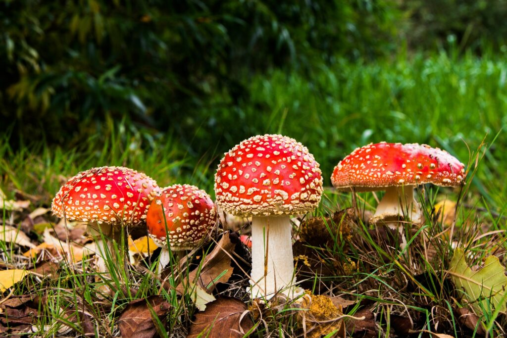 As cadeias e teias alimentares representam as relações de alimentação entre os organismos em um ecossistema. Elas mostram como a energia e os nutrientes fluem de um organismo para outro. Uma cadeia alimentar é uma sequência linear de organismos, onde cada um serve de alimento para o próximo. Ela começa com os produtores e segue pelos consumidores primários, secundários e terciários. 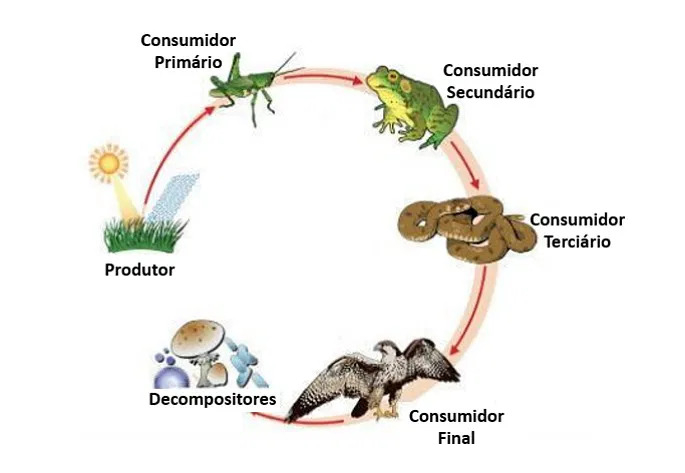 Uma teia alimentar é uma rede complexa de cadeias alimentares interconectadas, mostrando como diferentes organismos estão relacionados entre si em um ecossistema. 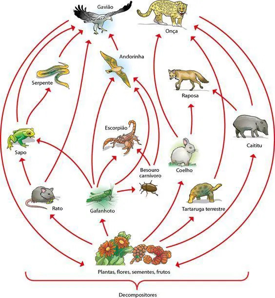 Os ciclos biogeoquímicos descrevem a circulação de elementos químicos essenciais para a vida, como carbono, nitrogênio, oxigênio e fósforo, entre os seres vivos e o ambiente. Esses ciclos garantem a disponibilidade contínua desses elementos para os organismos. O ciclo do carbono é um ciclo biogeoquímico essencial que recicla o carbono entre a atmosfera, a hidrosfera, a litosfera e a biosfera. Ele é a base de todas as moléculas orgânicas, movimentando-se rapidamente através da fotossíntese e respiração, e lentamente através de processos geológicos de longo prazo Para uma visão geral e didática, o ciclo pode ser dividido em duas partes fundamentais: Ciclo biologico: Envolve a fotossíntese, respiração e decomposição, ocorrendo em escalas de tempo curtas. Ciclo geológico: Inclui a formação de combustíveis fósseis e a liberação de carbono através da atividade vulcânica, ocorrendo em escalas de tempo muito longas. 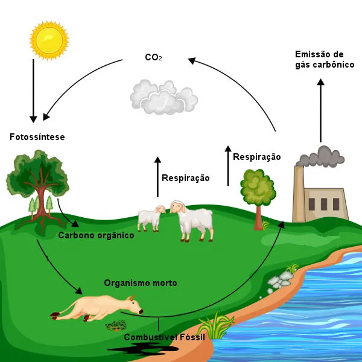 O ciclo do nitrogênio é o ciclo biogeoquímico responsável pela circulação do nitrogênio na natureza, garantindo sua movimentação entre a atmosfera, o solo e os seres vivos. Essencial para a formação de proteínas e ácidos nucleicos (como o DNA), o nitrogênio é transformado em formas assimiláveis pelas plantas. O processo de transformação do nitrogênio ocorre em cinco fases fundamentais: Fixação: Conversão do nitrogênio atmosférico (N2) em amônia (NH3) por bactérias fixadoras de nitrogênio. Nitrificação: Conversão da amônia em nitrito (NO2-) e depois em nitrato (NO3-) por bactérias nitrificantes. Assimilação: Absorção do nitrato pelas plantas, que o utilizam para formar proteínas e ácidos nucleicos. Ammonificação: Decomposição de matéria orgânica, liberando amônia de volta ao solo. Desnitrificação: Conversão do nitrato de volta em nitrogênio gasoso (N2) por bactérias desnitrificantes, completando o ciclo. 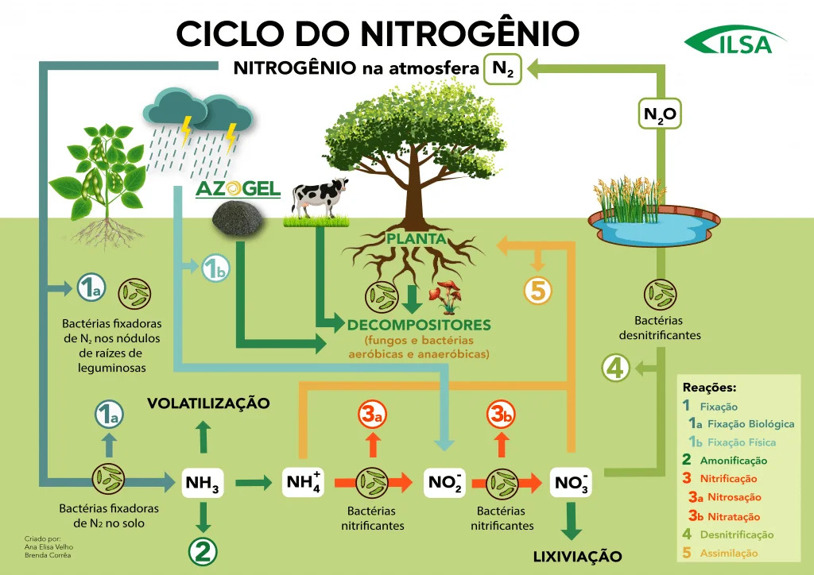 O ciclo do oxigênio é o processo biogeoquímico pelo qual o oxigênio circula entre a atmosfera, a litosfera e a biosfera. Ele é impulsionado principalmente pela fotossíntese (que produz e libera oxigênio) e pela respiração e decomposição (que o consomem), sustentando a vida na Terra O ciclo do oxigênio pode ser dividido em quatro fases principais: Fotossíntese: Plantas, algas e cianobactérias produzem oxigênio ao converter dióxido de carbono e água em glicose e oxigênio. Respiração: Organismos vivos consomem oxigênio para quebrar a glicose e liberar energia, produzindo dióxido de carbono e água como subprodutos. Decomposição: Micro-organismos decompõem matéria orgânica morta, consumindo oxigênio e liberando dióxido de carbono. Combustão: A queima de combustíveis fósseis consome oxigênio e libera dióxido de carbono na atmosfera, afetando o equilíbrio do ciclo. 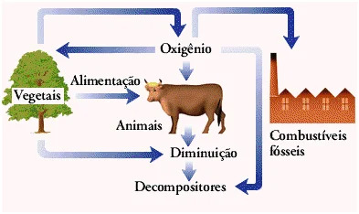 O ciclo do fósforo é o processo biogeoquímico pelo qual o fósforo circula pelo solo, pela água e pelos seres vivos. Por não apresentar uma fase gasosa significativa, o fósforo não circula na atmosfera, sendo classificado como um ciclo sedimentar. O ciclo do fósforo pode ser dividido em quatro fases principais: Intemperismo: O fósforo presente em rochas é liberado no solo e na água através da ação de agentes climáticos, como chuva e vento. Absorção pelas plantas: As plantas absorvem o fósforo do solo na forma de íons fosfato (PO4^3-), incorporando-o em suas estruturas. Transferência para os consumidores: Animais herbívoros consomem as plantas, incorporando o fósforo em seus corpos. Carnívoros, por sua vez, obtêm fósforo ao se alimentarem de herbívoros. Decomposição e retorno ao solo: Quando plantas e animais morrem, decompositores quebram a matéria orgânica, liberando fósforo de volta ao solo, onde pode ser reutilizado pelas plantas. 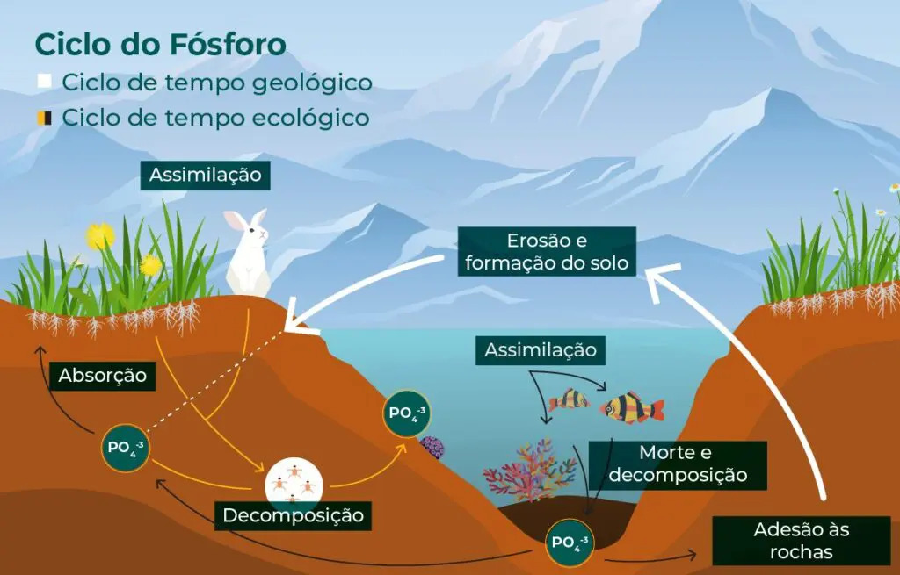 Os impactos ambientais referem-se às alterações no meio ambiente causadas por atividades humanas, que podem afetar negativamente os ecossistemas e a biodiversidade. Esses impactos incluem poluição, desmatamento, mudanças climáticas e perda de habitats. 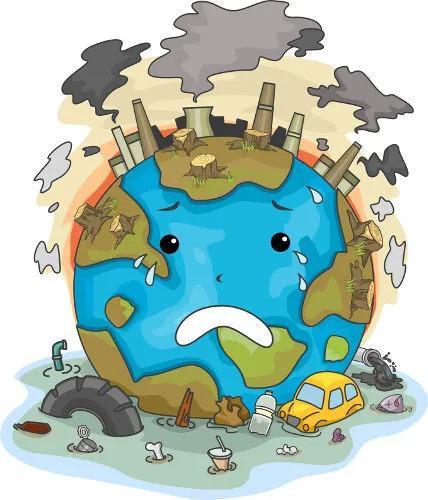 O sistema digestório é responsável pela ingestão, digestão e absorção dos alimentos, transformando-os em nutrientes que o corpo pode utilizar para energia, crescimento e reparo celular. Ele inclui órgãos como boca, esôfago, estômago, intestinos, fígado e pâncreas. O sistema digestório é composto por: 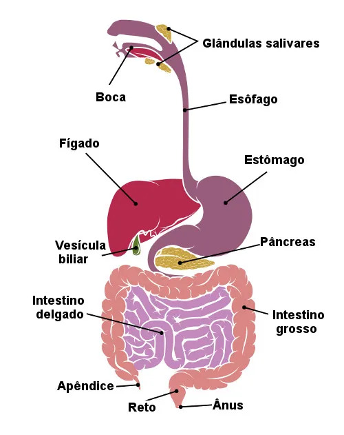 A boca é a porta de entrada do sistema digestório. Suas principais funções são a mastigação (digestão mecânica) e o início da digestão química dos carboidratos, transformando o alimento em bolo alimentar para seguir viagem até o estômago O processo ocorre na cavidade oral por meio de três estruturas principais: 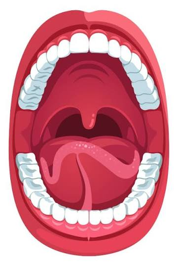 O esôfago é um tubo muscular de aproximadamente 25 cm que conecta a faringe ao estômago. Sua principal função no sistema digestivo é o transporte seguro do bolo alimentar, utilizando movimentos musculares rítmicos chamados peristaltismo. O esôfago possui três camadas principais: 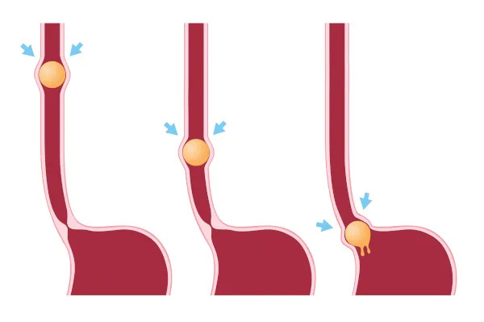 O estômago é um órgão muscular em forma de bolsa localizado no quadrante superior esquerdo do abdômen. Sua principal função é armazenar temporariamente o alimento e realizar a digestão mecânica e química, transformando o bolo alimentar em uma massa semilíquida chamada quimo O estômago possui três camadas principais: 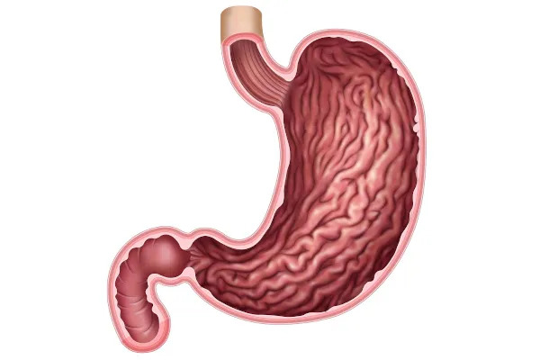 O intestino delgado é a parte mais longa do sistema digestivo (cerca de 6 a 8 metros). Sua principal função é finalizar a digestão dos alimentos e absorver cerca de 90% dos nutrientes e da água ingeridos, transferindo-os para a corrente sanguínea Ele é dividido em três partes: O intestino grosso é a porção final do sistema digestório. Com cerca de 1,5 metro de comprimento, sua principal função é absorver água e sais minerais, transformar o quimo em fezes sólidas e atuar na produção de vitaminas pela microbiota intestinal. Ele é dividido em quatro partes: O fígado é o maior órgão interno e uma glândula vital do sistema digestório. Sua principal função digestiva é a produção da bile, um líquido que age como um detergente biológico no intestino delgado, emulsionando (quebrando) as gorduras para facilitar a absorção. Além disso, o fígado desempenha funções metabólicas importantes, como a regulação dos níveis de glicose no sangue, armazenamento de vitaminas e minerais, desintoxicação de substâncias nocivas e síntese de proteínas plasmáticas. O fígado é dividido em quatro lobos principais: O pâncreas é uma glândula vital localizada atrás do estômago. Ele atua no sistema digestivo produzindo o suco pancreático, que contém enzimas responsáveis por quebrar proteínas, carboidratos e gorduras, além de bicarbonato para neutralizar o ácido do estômago. Também atua no sistema endócrino, controlando a glicemia. O pâncreas possui duas funções principais: O sistema respiratório é responsável pela troca de gases entre o corpo e o ambiente, permitindo a entrada de oxigênio e a eliminação de dióxido de carbono. Ele inclui órgãos como nariz, faringe, laringe, traqueia, brônquios e pulmões. O sistema respiratório é composto por: O nariz é a principal via de entrada do ar no sistema respiratório. Ele filtra, aquece e umidifica o ar inspirado, preparando-o para chegar aos pulmões. O nariz também contém receptores olfativos, permitindo a percepção de cheiros. O nariz é composto por duas cavidades nasais, separadas pelo septo nasal, e revestidas por mucosa e pelos que ajudam na filtragem do ar. Além disso, possui seios paranasais que contribuem para a ressonância da voz e a redução do peso do crânio. A faringe é um tubo muscular que conecta a cavidade nasal e oral à laringe e ao esôfago. Ela desempenha um papel crucial na passagem do ar para os pulmões e dos alimentos para o estômago, funcionando como uma via comum para ambos os sistemas. A faringe é dividida em três regiões:
A laringe é um órgão tubular localizado na parte anterior do pescoço, responsável pela produção de sons e pela proteção das vias respiratórias durante a deglutição. Ela contém as cordas vocais, que vibram para gerar a voz. A laringe é composta por cartilagens, músculos e ligamentos, sendo a cartilagem tireoide a maior delas, popularmente conhecida como "pomo de Adão". Além disso, a laringe possui a epiglote, uma estrutura que fecha a entrada da laringe durante a deglutição, evitando que alimentos e líquidos entrem nas vias respiratórias. A traqueia é um tubo cartilaginoso que conecta a laringe aos brônquios, permitindo a passagem do ar para os pulmões. Ela é revestida por uma mucosa ciliada que ajuda a filtrar partículas e muco, protegendo o sistema respiratório. A traqueia é composta por anéis cartilaginosos em forma de C, que mantêm o tubo aberto e flexível. Entre os anéis, há tecido conjuntivo e músculo liso, permitindo a expansão e contração da traqueia durante a respiração. Os brônquios são tubos que se ramificam a partir da traqueia, conduzindo o ar para os pulmões. Eles se dividem em brônquios principais (direito e esquerdo), que se subdividem em brônquios secundários e terciários, formando uma rede de condução de ar. Os brônquios possuem cartilagem em suas paredes, que mantém a estrutura aberta, e são revestidos por mucosa ciliada que ajuda a remover partículas e muco. Além disso, os brônquios contêm músculos lisos que podem se contrair ou relaxar, regulando o fluxo de ar para os pulmões. Os pulmões são os principais órgãos do sistema respiratório, responsáveis pela troca de gases entre o ar e o sangue. Localizados na cavidade torácica, eles são divididos em lobos: o pulmão direito possui três lobos (superior, médio e inferior), enquanto o esquerdo possui dois lobos (superior e inferior). Os pulmões contêm alvéolos, pequenas estruturas em forma de sacos, onde ocorre a troca de oxigênio e dióxido de carbono entre o ar inspirado e o sangue. A ventilação pulmonar é auxiliada pelo diafragma e pelos músculos intercostais, que promovem a expansão e contração da cavidade torácica. O sistema circulatório é responsável pelo transporte de sangue, nutrientes, gases e hormônios por todo o corpo. Ele inclui o coração, vasos sanguíneos (artérias, veias e capilares) e o sangue. O sistema circulatório é composto por duas circulações principais: a circulação sistêmica, que leva sangue oxigenado do coração para o corpo e retorna sangue desoxigenado ao coração, e a circulação pulmonar, que leva sangue desoxigenado do coração para os pulmões e retorna sangue oxigenado ao coração. O coração é um órgão muscular oco localizado no centro do tórax, entre os pulmões. Ele funciona como uma bomba que impulsiona o sangue por todo o corpo, garantindo a circulação adequada de oxigênio e nutrientes. O coração é dividido em quatro câmaras:
dois átrios (superiores) e dois ventrículos (inferiores).
O átrio direito recebe sangue desoxigenado do corpo, enquanto o átrio esquerdo recebe sangue oxigenado dos pulmões.
O ventrículo direito bombeia sangue para os pulmões, e o ventrículo esquerdo bombeia sangue para o resto do corpo. Os vasos sanguíneos são estruturas tubulares que transportam o sangue por todo o corpo. Eles são classificados em três tipos principais: artérias, veias e capilares. As artérias transportam sangue do coração para os tecidos, geralmente oxigenado, exceto nas artérias pulmonares. As veias retornam o sangue dos tecidos para o coração, geralmente desoxigenado, exceto nas veias pulmonares. Os capilares são vasos microscópicos que permitem a troca de substâncias entre o sangue e os tecidos. O sangue é um fluido vital que circula pelo sistema circulatório, transportando oxigênio, nutrientes, hormônios e resíduos metabólicos. Ele é composto por plasma, glóbulos vermelhos, glóbulos brancos e plaquetas. O plasma é a parte líquida do sangue, responsável pelo transporte de nutrientes, hormônios e resíduos. Os glóbulos vermelhos (hemácias) transportam oxigênio dos pulmões para os tecidos e dióxido de carbono dos tecidos para os pulmões. Os glóbulos brancos (leucócitos) são células do sistema imunológico que combatem infecções. As plaquetas são fragmentos celulares que auxiliam na coagulação do sangue. O sistema excretor é responsável pela eliminação de resíduos metabólicos e excesso de substâncias do corpo, mantendo o equilíbrio hídrico e eletrolítico. Ele inclui órgãos como rins, ureteres, bexiga e uretra. Os rins são órgãos em forma de feijão localizados na região lombar, responsáveis pela filtração do sangue e produção de urina. Cada rim contém milhões de néfrons, que são as unidades funcionais responsáveis pela remoção de resíduos e excesso de substâncias do sangue. Os rins desempenham funções vitais, como a regulação do equilíbrio hídrico e eletrolítico, manutenção da pressão arterial, produção de hormônios e ativação da vitamina D. A urina formada nos rins é transportada pelos ureteres até a bexiga para armazenamento temporário. Os ureteres são tubos musculares que transportam a urina dos rins para a bexiga. Cada ureter possui cerca de 25 a 30 centímetros de comprimento e é revestido por uma mucosa que protege contra infecções e lesões. A movimentação da urina pelos ureteres ocorre por meio de contrações musculares chamadas peristaltismo, que empurram a urina em direção à bexiga. Além disso, os ureteres possuem válvulas que impedem o refluxo da urina para os rins. A bexiga é um órgão muscular oco localizado na pelve, responsável pelo armazenamento temporário da urina antes da eliminação. Ela possui paredes elásticas que se expandem à medida que a urina se acumula, permitindo a retenção de grandes volumes. A bexiga é revestida por uma mucosa que protege contra infecções e lesões. Quando a bexiga atinge sua capacidade máxima, sinais nervosos são enviados ao cérebro, indicando a necessidade de urinar. Durante a micção, os músculos da bexiga se contraem, expulsando a urina pela uretra. A uretra é um canal que conduz a urina da bexiga para fora do corpo. Nos homens, a uretra também transporta o sêmen durante a ejaculação, enquanto nas mulheres, sua função é exclusivamente urinária. A uretra masculina possui cerca de 20 centímetros de comprimento, enquanto a uretra feminina mede aproximadamente 4 centímetros. A uretra é revestida por uma mucosa que protege contra infecções e lesões, e possui esfíncteres que controlam a liberação da urina. O sistema nervoso é responsável por coordenar e controlar as funções do corpo, permitindo a comunicação entre diferentes partes do organismo e o ambiente externo. Ele inclui o cérebro, a medula espinhal e os nervos periféricos. O cérebro é o órgão central do sistema nervoso, localizado dentro do crânio. Ele é responsável pelo processamento de informações, controle das funções corporais, percepção sensorial, memória, aprendizado e tomada de decisões. O cérebro é dividido em várias regiões, incluindo o córtex cerebral, que é responsável pelas funções cognitivas superiores, e estruturas subcorticais, como o tálamo e o hipotálamo, que desempenham papéis importantes na regulação de funções corporais e comportamentais. A medula espinhal é uma estrutura tubular que se estende a partir do cérebro, passando pelo canal vertebral da coluna vertebral. Ela transmite sinais entre o cérebro e o corpo, além de coordenar reflexos e respostas automáticas a estímulos. A medula espinhal é protegida pelas vértebras da coluna e envolvida por meninges e líquido cerebrospinal, que fornecem suporte e proteção contra lesões. Ela é composta por substância cinzenta, que contém corpos celulares de neurônios, e substância branca, que contém fibras nervosas mielinizadas responsáveis pela condução de sinais elétricos. Os nervos periféricos são conjuntos de fibras nervosas que conectam o sistema nervoso central aos órgãos, músculos e tecidos do corpo. Eles transmitem sinais elétricos e químicos, permitindo a comunicação entre o cérebro, a medula espinhal e o restante do organismo. Os nervos periféricos são classificados em nervos sensoriais, que transmitem informações do corpo para o sistema nervoso central, e nervos motores, que conduzem comandos do sistema nervoso central para os músculos e glândulas. Além disso, existem nervos mistos, que contêm fibras sensoriais e motoras. Os nervos periféricos desempenham funções essenciais na comunicação entre o sistema nervoso central e o corpo. Eles permitem a percepção de estímulos sensoriais, como toque, dor, temperatura e pressão, além de controlar movimentos voluntários e involuntários dos músculos. Além disso, os nervos periféricos desempenham um papel importante na regulação de funções automáticas do corpo, como a frequência cardíaca, a digestão e a respiração, através do sistema nervoso autônomo. O sistema endócrino é responsável pela produção e liberação de hormônios, que são mensageiros químicos que regulam diversas funções do corpo, incluindo crescimento, metabolismo, reprodução e resposta ao estresse. Ele inclui glândulas como hipófise, tireoide, paratireoides, adrenais, pâncreas e gônadas. A hipófise, também conhecida como glândula pituitária, é uma pequena glândula localizada na base do cérebro, abaixo do hipotálamo. Ela é considerada a "glândula mestra" do sistema endócrino, pois regula a atividade de outras glândulas endócrinas através da liberação de hormônios. A hipófise é dividida em duas partes: a adenohipófise (lobo anterior), que produz hormônios como o hormônio do crescimento, prolactina e hormônios gonadotróficos; e a neurohipófise (lobo posterior), que armazena e libera hormônios produzidos pelo hipotálamo, como a ocitocina e o hormônio antidiurético (ADH). A tireoide é uma glândula em forma de borboleta localizada na parte anterior do pescoço, abaixo da laringe. Ela produz hormônios como a tiroxina (T4) e a triiodotironina (T3), que regulam o metabolismo, o crescimento e o desenvolvimento do corpo. A tireoide é controlada pela hipófise através do hormônio estimulante da tireoide (TSH). O funcionamento adequado da tireoide é essencial para a saúde geral, e desequilíbrios hormonais podem levar a condições como hipotireoidismo ou hipertireoidismo. As paratireoides são pequenas glândulas localizadas atrás da tireoide, geralmente quatro no total. Elas produzem o hormônio paratireoideano (PTH), que regula os níveis de cálcio e fósforo no sangue e nos ossos. O PTH aumenta os níveis de cálcio no sangue ao estimular a liberação de cálcio dos ossos, aumentar a absorção de cálcio no intestino e reduzir a excreção de cálcio pelos rins. O funcionamento adequado das paratireoides é essencial para a saúde óssea e o equilíbrio mineral do corpo. As glândulas adrenais, também conhecidas como suprarrenais, são glândulas localizadas acima dos rins. Elas produzem hormônios como adrenalina, noradrenalina e cortisol, que desempenham papéis importantes na resposta ao estresse, metabolismo e regulação da pressão arterial. As adrenais são compostas por duas partes: o córtex adrenal, que produz hormônios esteroides como cortisol e aldosterona; e a medula adrenal, que produz catecolaminas como adrenalina e noradrenalina. O funcionamento adequado das adrenais é essencial para a saúde geral e a resposta do corpo ao estresse. O pâncreas é uma glândula localizada no abdômen, atrás do estômago. Ele possui funções endócrinas e exócrinas, sendo responsável pela produção de hormônios como insulina e glucagon, que regulam os níveis de glicose no sangue. A insulina reduz os níveis de glicose no sangue ao facilitar a entrada de glicose nas células, enquanto o glucagon aumenta os níveis de glicose ao estimular a liberação de glicose armazenada no fígado. O funcionamento adequado do pâncreas é essencial para a regulação do metabolismo energético e a prevenção de condições como diabetes. As gônadas são as glândulas sexuais responsáveis pela produção de hormônios sexuais e gametas. Nos homens, os testículos produzem testosterona e espermatozoides, enquanto nas mulheres, os ovários produzem estrogênio, progesterona e óvulos. Os hormônios produzidos pelas gônadas desempenham papéis essenciais no desenvolvimento sexual, na regulação do ciclo menstrual, na fertilidade e na manutenção das características sexuais secundárias. O funcionamento adequado das gônadas é crucial para a saúde reprodutiva e o equilíbrio hormonal do corpo. O sistema reprodutor é responsável pela reprodução e perpetuação da espécie. Ele inclui órgãos e estruturas que permitem a produção de gametas, a fecundação e o desenvolvimento do embrião. Nos seres humanos, existem diferenças entre os sistemas reprodutores masculino e feminino. O sistema reprodutor masculino é responsável pela produção de espermatozoides (gametas) e do hormônio testosterona, além de viabilizar a cópula. Ele é formado por órgãos externos e internos que atuam em conjunto para a reprodução Os principais componentes e suas funções são: Os testículos são as gônadas masculinas e principais órgãos do sistema reprodutor do homem. Localizados fora da cavidade abdominal dentro da bolsa escrotal, eles possuem duas funções vitais: a produção de espermatozoides e a síntese de testosterona O epidídimo é um órgão alongado que se encontra sobre os testículos e é responsável por armazenar e desenvolver os espermatozoides. Os ductos deferentes são tubos que transportam os espermatozoides desde os testículos até a uretra, permitindo a passagem dos gametas durante a ejaculação. As vesículas seminais são glândulas que produzem líquido seminal, que nutre e transporta os espermatozoides durante a ejaculação. A próstata é uma glândula que produz líquido prostático, que contribui para a composição do esperma e auxilia na motilidade dos espermatozoides. O pênis é o órgão genital masculino externo, responsável pela passagem do esperma durante a ejaculação e pela urinação. O sistema reprodutor feminino é responsável pela produção de óvulos e do hormônio estrogênio, além de viabilizar a cópula. Ele é formado por órgãos externos e internos que atuam em conjunto para a reprodução Os principais componentes e suas funções são: Os óvulos são as células reprodutivas femininas, produzidas pelos ovários. Eles contêm o material genético necessário para a fertilização e o desenvolvimento inicial do embrião. Os ovários são as gônadas femininas e responsáveis pela produção de óvulos e hormônios como o estrogênio e a progesterona. O útero é o órgão onde o embrião se desenvolve durante a gravidez, recebendo nutrientes e oxigênio através do colo do útero. A vagina é o canal que conecta o útero aos órgãos genitais externos, permitindo a passagem dos espermatozoides durante a fertilização e servindo como canal de parto durante o nascimento. As tubas uterinas são canais que conectam os ovários ao útero, permitindo a passagem dos óvulos fertilizados.Transcrição
Tradução
Biotecnologia e Organismos Geneticamente Modificados (OGMs)
Aplicações da Biotecnologia
Exemplos de OGMs
Teorias da Evolução
Teoria da Seleção Natural
Teoria do Lamarquismo
Teoria Sintética da Evolução
Evidências da Evolução
Registros Fósseis
Anatomia Comparada
Embriologia
Seleção Natural
Como funciona a Seleção Natural
Exemplos de Seleção Natural
Ecossistemas
Componentes de um Ecossistema:
1. Produtores:
2. Consumidores:
3. Decompositores:
Cadeias e Teias Alimentares
Cadeia Alimentar:
Teia Alimentar:
Ciclos Biogeoquímicos
Ciclo do Carbono:
Ciclo do Nitrogênio:
Ciclo do Oxigênio:
Ciclo do Fósforo:
Impactos Ambientais
Principais Impactos Ambientais:
Sistema Digestório
Funções do Sistema Digestório:
Boca
Esôfago
Estômago
Intestino Delgado
Intestino Grosso
Fígado
Pâncreas
Sistema Respiratório
Funções do Sistema Respiratório:
Nariz
Faringe
Laringe
Traqueia
Brônquios
Pulmões
Sistema Circulatório
Funções do Sistema Circulatório:
componentes do Sistema Circulatório:
Coração
Vasos Sanguíneos
Sangue
Sistema Excretor
Funções do Sistema Excretor:
Componentes do Sistema Excretor:
Rins
Ureteres
Bexiga
Uretra
Sistema Nervoso
Funções do Sistema Nervoso:
Componentes do Sistema Nervoso:
Cérebro
Medula Espinhal
Nervos Periféricos
Funções dos Nervos Periféricos
Sistema Endócrino
Funções do Sistema Endócrino:
Componentes do Sistema Endócrino:
Hipófise
Tireoide
Paratireoides
Adrenais
Pâncreas
Gônadas
Sistema Reprodutor
Funções do Sistema Reprodutor:
Componentes do Sistema Reprodutor:
Sistema reprodutor masculino:
testículos
Epidídimo
Ductos deferentes

Vesículas seminais
Próstata
Pênis
Sistema reprodutor feminino:
Óvulos
Ovários
Útero
Vagina
Tubas Uterinas